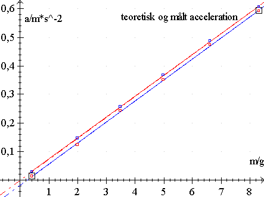

På et tidspunkt trænger en øvelse til en ny drejning.
Atwoods faldapparat:
forsøg med forskellige belastninger.
M1= 50.243g, M2= 49.973g
ateori = (M2+m-M1)/(M2+m+M1)*g
1: [ 1: 6] : [0.7:6.2] : a = 0.0893 m - 0.014
1: [ 1: 6] : [0.7:6.2] : a = 0.0916 m + 0.0073
1: [ 1: 6] : [0.7:6.2] : a = 0.0893 m - 0.014
1: [ 1: 6] : [0.7:6.2] : a = 0.0893 m - 0.014
1: [ 1: 6] : [0.7:6.2] : a = 0.0893 m - 0.014
1: [ 1: 6] : [0.7:6.2] : a = 0.0893 m - 0.014
| m/g | a/m/s² | a/m/s² |
| små lodder | målt | teoretisk |
| 0,653 | 0,043 | 0,063 |
| 1,593 | 0,128 | 0,154 |
| 2,552 | 0,217 | 0,244 |
| 3,436 | 0,295 | 0,326 |
| 5,274 | 0,456 | 0,491 |
| 6,168 | 0,537 | 0,569 |
Grafen herunder viser et andet forsøg, hvor accelerationen er afbildet som funktion af masseforskellen Dm. Her er der også taget hensyn til trissens inertimoment I = 2,4·10-6 kg·m2, det svarer til en belastning på godt 4 gram. Med denne korrektion bliver de to grafer parallelle. Den teoretiske graf er øverst, den målte graf er nederst. Differensen skyldes gnidning i trissen og luftmodstand. Man kan se, at der skal ca. 0,2 g til at overvinde gnidningen, så Fg = 2 mN.
